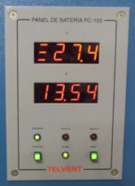

Panel de Baterías
Dependiendo de la configuración elegida del simulador, cada puesto va equipado con un panel de baterías con indicadores y pulsadores reales o con uno mimético simulado por software.
|  |  |
El panel de baterías simula al que, en una consola real GMDSS, controla la alimentación externa y las baterías. Muestra la tensión e intensidad en los bornes de la batería y dispone de indicadores de equipo encendido, fallo en la alimentación externa y fallo de carga automática de las baterías. Además, permite seleccionar el régimen de carga de la batería y tiene un conmutador para conectar el transceptor de MF/HF a cargas ficticias, a su antena o ésta a tierra.
Mediante esta función el alumno puede practicar los procedimientos asociados al mantenimiento del panel de baterías.